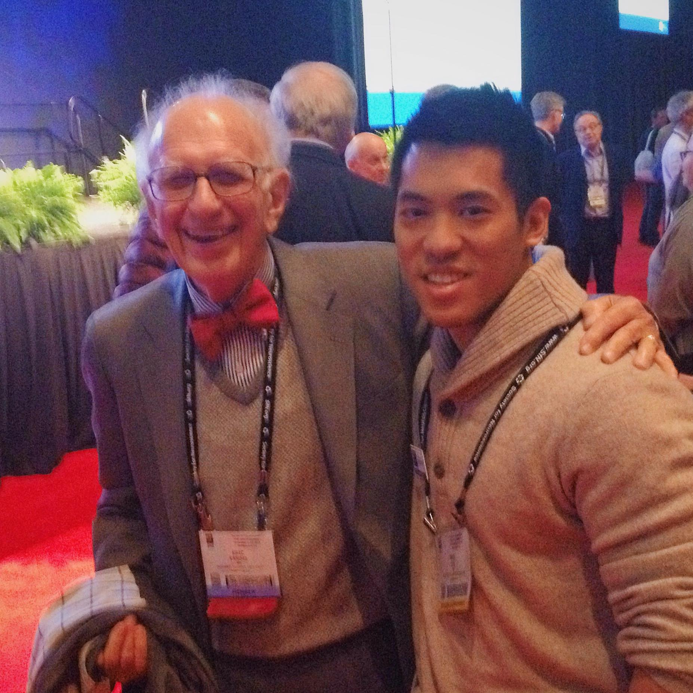

First, a word of caution: this blog post, intended to be a living one, is only intended to be of use to those applying specifically to Ph.D. programs in neuroscience; something I learned in this process is that programs (even those ostensibly similar in discipline) differ wildly in their expectations and application processes. Caveat emptor.
My Academic Journey
Being back home in Hawaii, I've been afforded an indulgence that I so rarely (if ever)
have had over the past eight years: to just sit, to just think. On the white sands
of Kalama Beach (see banner photo), I took stock of the past year applying to
graduate schools: what went wrong, what went right, and about what I would
wish for others to know should the subject themselves to the same unsparing
referendum of one’s scientific self-worth. Although I wasn’t a better applicant
than others—mistakes were made that have since probably been overlearned
from—what follows next is hopefully still of some use to others.
I also tried to think deeply about what I might offer given the already excellent
contributions to the "Getting into Neuroscience Grad School" literature from others like
Lucy Lai,
Vael Gates, and
Oriol Pavón (each of whose
blogposts I found to be immensely helpful in my own application process);
I thought about what I could possibly add of value given that I've always been a
relatively poor student, went to an undergrad few have heard of, and hadn't met
an academic until college. But in this, I think, I might have some advice for
those that find themselves in a similar situation and still desire to attend
a good (even great) Ph.D. program in neuroscience.
This post will be
less prescriptive and more personal; it's meant to be an account of my
experiences—failures and all—with as much honesty as possible.
More bildungsroman, less how-to guide. If you'd rather skip stright to my application experience,
click [here]!
Pacific Ocean to Puget Sound

Although I absolutely loved learning (I would memorize the dictionary for fun as a kid), I was never a great student and
in fact I was a rather poor one: I had something like a 2.8 GPA going into
junior year of high school and let's not talk about how I did in math. That sort of all changed
when I saw this
lecture series by everyone's favorite bow-tied neuroscientist,
Eric Kandel (pictured above with the author); I remember every day rushing to get home to view the day's new lecture
and being so jealous of all the student's that got to be there to view it live. I
didn't know anything about neuroscience back then (and neither did anyone else around me) but
I knew I desperately wanted to be a part of it. I've had the good fortune to have discovered
neuroscience so early and also to have had such a laser focus on it: there's never been a moment in
the last decade in which I've more than entertained the notion of studying anything else.
I got my ass
into gear and started going to summer school and registering for AP classes. I decided against
attending a local community college and started looking at applying to mainland bachelor's programs.
I also sought out
opportunities where I could find them: I met with neurologists, like Dr.
Stuart Pang, that I "interviewed" at the hospital where my mom was a secretary; taking a week off
from school (with permission), I went to the American Academy of Neurology's annual meeting in Honolulu
and took in what little I could understand—they had no registration category for a lone
high school student so they made me a badge out of a notecard. I applied to mainland
colleges that had any semblance of a neuroscience program and ultimately ended up at the University of Puget Sound (UPS).
It wasn't the biggest of colleges, or the most well-known, but they had a neuroscience lab (just one) and
that was enough for me.
Jumping ahead four years, I ended up graduating with a B.S. in Biochemistry and Math and, very on-brand for me,
I sacrificed my GPA for taking as many classes as I could and ended up with 159 credit hours (1 shy of a double B.S.) but a 3.13 GPA. Yikes.
I knew this and the three years of research experience I had wouldn't be enough for the sorts of
graduate schools I wanted to attend so, although I was decided on a Ph.D.
Over the next three years, I did everything I could to remedy the above by joining the Brain Observatory team at
the Allen Institute for Brain Science and also getting my masters in Applied Mathematics at the University of
Washington.